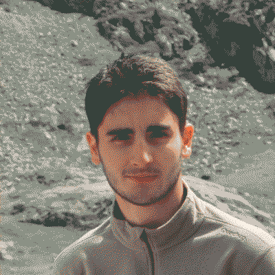

Home
Master 2 degree student at Polytech Nice Sophia.
This webpage is using a minimalist design in order to have the lowest carbon footprint
Work Experience
-
March 2023 - August 2023: Alten Lab - Internship (6 months)
Measuring the energy efficiency of an embedded intelligence and developing optimization techniques on AI models. Literature Search and empirical study. Python with TensorFlow.
-
June 2022 - July 2022: I3S Laboratory - Internship (2 months)
Study of the impact of different memory allocation strategies on a VM. Literature search and empirical research. Linux system + Python with TensorFlow.
-
March 2022 - May 2022: I3S CO2 Group - Internship (3 months)
Development of a tool to measure the carbon impact of digital technology, independent project, work in a research lab. Python + Vue.js.
-
October 2021 - January 2022: Alter Alsace Energie - Internship (4 months)
Responsible for developing a web application for monitoring consumption, work in an association, working independently. MySQL + Node.js + Vue.js.
-
July 2020: SIDEL - Summer Job (1 month)
Project, teamwork, documentary research, development of mobile applications for internal localization.
Studies
-
2019-2022: Master Degree, specialising in computer science - Polytech Nice-Sophia
Group project-based training. Object-oriented programming, database management, web development, mobile application development, software architecture, AI, data science. Currently in my last year of study, where I specialize in AI and data engineering.
-
2017-2019: Preparatory class for the Grandes Ecoles specialising in physics and chemistry - Lycée Kléber
Preparatory class focusing on physics and chemistry subjects.
-
2015-2017: General high school, obtained the scientific diploma with honours
Studied in a general high school and achieved the scientific diploma with honors.
Projects
-
My Digital Impact
Development of a tool to calculate greenhouse gas emissions from digital technology.
[Key words] Green IT, Web Development, Vue.js, data vizualisation
Available here (fr) -
TER 2022/2023 - Limiting Memory Reclaiming Impact on VMs Performance
[Key words] Linux system, Python, Machine Learning, Memory Management
Article (fr) Poster -
Knowledge Engineering Project - Festival City : A service that allows you to access information about festivals in France and the cities in which they take place.
[Key words] Semantic web, Knowledge graph (turtle, sparql), text extraction, python, web design
Project Report (fr)
Competences
Theoretical Competences
| Data Science | AI (Machine Learning, Reinforcement Learning...), data valorization, information visualization. |
|---|---|
| Software | Software architecture, software design, HMI, Web development. |
| Languages | English (TOEIC 955/995) - German (B1) - Italian (Beginner) |
Technical Competences
| Programming Languages | Python, R, Java, C, C++. |
|---|---|
| ML tools | TensorFlow, Pytorch, scikit-learn, pandas, numpy |
| Web | NodeJs, Angular, VueJs. |
| Mobile Application | Android Studio. |
| Data Base | SQL (MySQL), Pandas |
Contact Information
Email: alexis.merienne@gmail.com
University Email : alexis.merienne@etu.univ-cotedazur.fr
Linkedin Page GithubPhone: +33 6 40 78 83 79